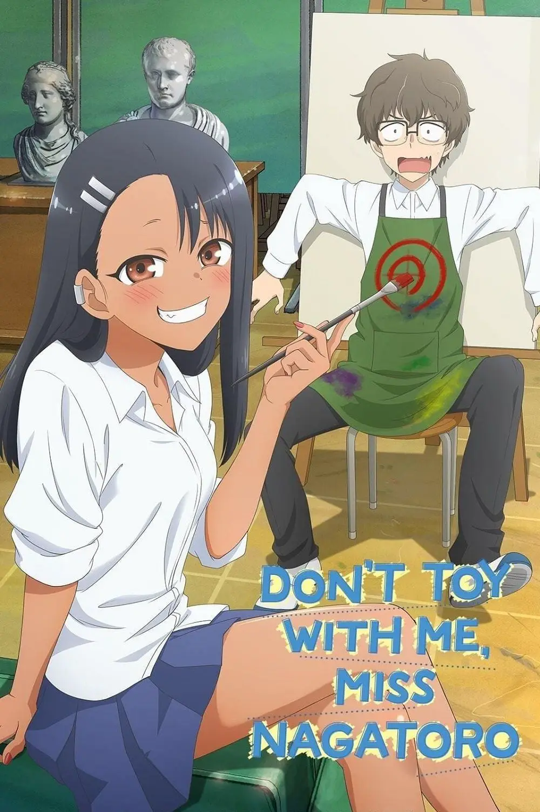

Non tormentarmi, Nagatoro

Descrizione:
"Non tormentarmi, Nagatoro" è un manga e un anime giapponese creato da Nanashi. La storia segue le vicende di Hayase Nagatoro, una studentessa liceale che prende gusto a tormentare e provocare il suo compagno di scuola, Naoto Hachioji. Nonostante sembri una bullo, Nagatoro mostra gradualmente una natura affettuosa e preoccupata per Hachioji. La trama si concentra sulla loro relazione, esplorando dinamiche di flirt e amicizia. Il manga è noto per il suo stile di disegno dettagliato e per come affronta le complesse emozioni dei personaggi. La storia affronta temi come la crescita personale e la scoperta di se stessi attraverso le interazioni quotidiane.
Personaggi:
- Nagatoro Hayase
- Senpai (Nome non specificato)
- Gamo-Chan (Gamma)
- Yoshi (Yosshii)
- Sakura
- Presidentessa del club di arte
- Famiglia di Hayase Nagatoro (Nomi non specificati)
- Famiglia del senpai (Nomi non specificati)